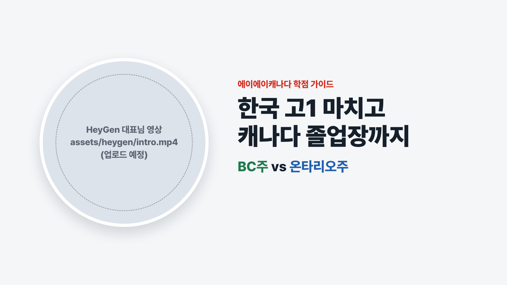
내레이션 (HeyGen 영상 음성 — HEYGEN_SCRIPT.md 인트로)
화면 둥근 창의 대표님 얼굴(0-9s); 제목 '한국 고1 마치고 캐나다 졸업장까지'(0.6-4s); 'BC주 vs 온타리오주'(4-9s)
소리 BGM 낮게 시작, 대표님 음성 위주
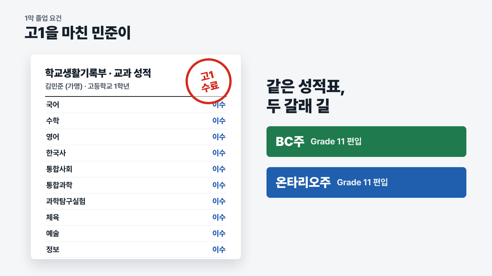
내레이션 [calm] 한국에서 고1을 마친 민준이. 같은 성적표를 들고 BC로 갈 때와 온타리오로 갈 때, 졸업까지의 길은 꽤 다릅니다.
화면 성적표와 '고1 수료' 도장(0.3-3s); 'BC주 · 온타리오주 Grade 11' 두 갈래(3-8s)
소리 도장 '쾅', 종이 찢어지듯 둘로 갈라지는 '슥'
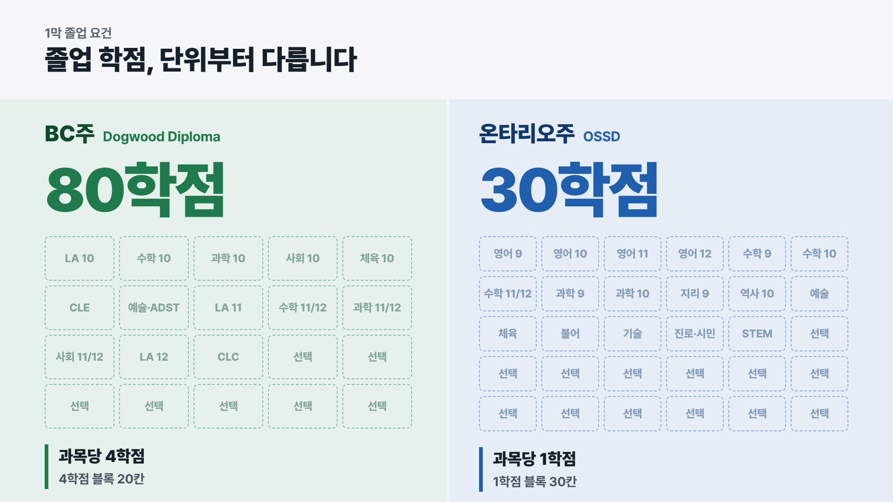
내레이션 [calm] BC는 80학점, 온타리오는 30학점이 필요합니다. 숫자 차이가 커 보이지만, BC는 한 과목이 4학점, 온타리오는 1학점이라 단위가 다를 뿐이에요.
화면 '80학점' 블록 틀(0.5-4s); '30학점' 블록 틀(4-7s); '과목당 4학점 / 1학점'(7-11s)
소리 빈 칸이 그려질 때 가벼운 '틱' 연속
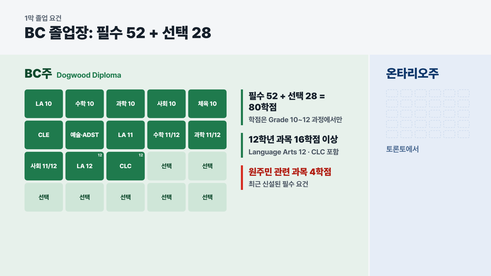
내레이션 [calm] BC 졸업장, 도그우드 디플로마는 10학년부터 12학년까지 필수 52학점과 선택 28학점을 채워야 합니다. 이 중 16학점 이상은 12학년 과목이어야 하고, 원주민 관련 과목 4학점도 필수예요.
화면 필수 13칸이 초록으로(0.5-4s); '12학년 16학점 이상'(4-8s); '원주민 관련 4학점'(8-13s)
소리 블록 착지마다 '톡'
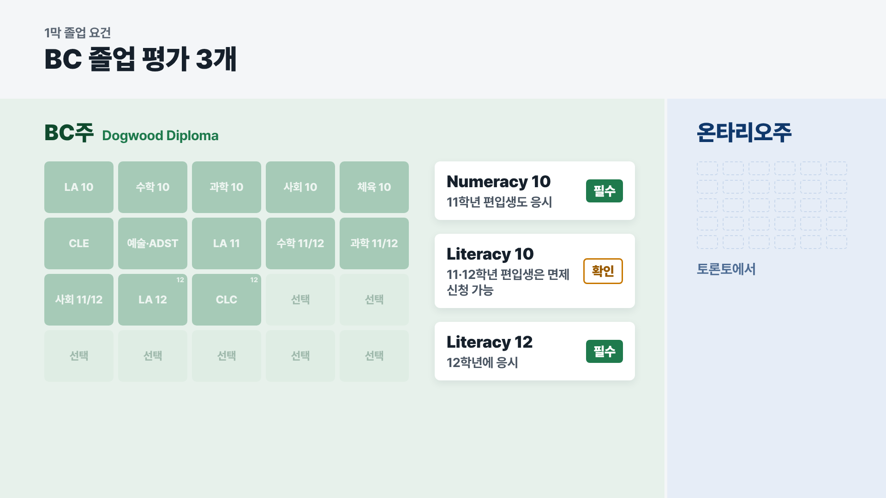
내레이션 [calm] 여기에 졸업 평가가 세 개 있습니다. 11학년이나 12학년으로 편입하면 리터러시 10은 면제를 신청할 수 있지만, 뉴머러시 10과 리터러시 12는 반드시 치러야 해요.
화면 평가 3개 이름(0.5-4s); 'Literacy 10 면제 신청 가능'(4-8s); 나머지 둘 '필수'(8-11s)
소리 평가 카드가 놓일 때 '탁' 3번
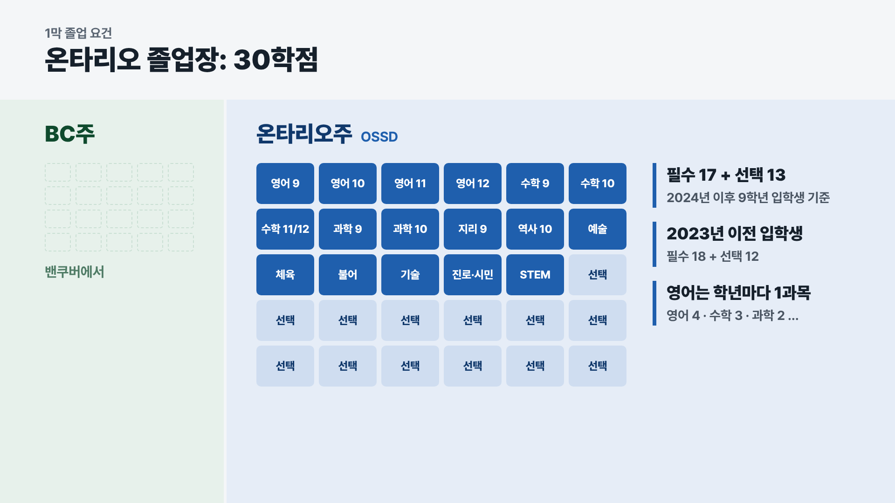
내레이션 [calm] 온타리오 졸업장, OSSD는 30학점입니다. 2024년 이후 9학년 입학생 기준으로 필수 17학점, 선택 13학점이고, 영어는 학년마다 한 과목씩 모두 네 과목을 들어야 해요.
화면 필수 17칸이 파랑으로(0.5-4s); '필수 17 + 선택 13'(4-8s); '영어는 학년마다 1과목'(8-12s)
소리 블록 착지마다 '톡'
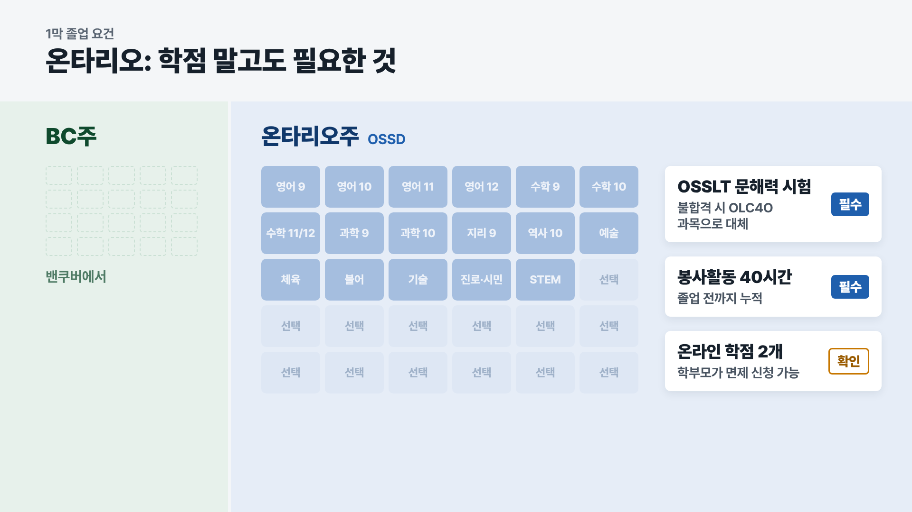
내레이션 [calm] 그리고 학점과 별도로 문해력 시험 OSSLT, 봉사활동 40시간, 온라인 학점 두 개가 있습니다.
화면 'OSSLT'(0.5-3s); '봉사 40시간'(3-6s); '온라인 학점 2개'(6-9s)
소리 항목마다 '탁'
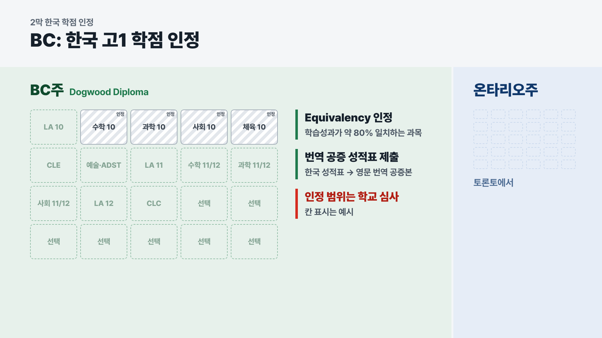
내레이션 [calm] 이제 민준이의 고1 성적표를 볼까요. BC에서는 BC 밖에서 들은 과목 중 학습 내용이 약 80% 일치하는 과목만 이퀴벌런시로 인정됩니다. 성적표는 번역 공증본으로 내야 해요.
화면 성적표 블록이 10학년 칸으로 떨어짐(0.5-4s); '약 80% 일치'(4-8s); '번역 공증'(8-12s)
소리 인정 블록 착지 '톡', 도장 '쾅'
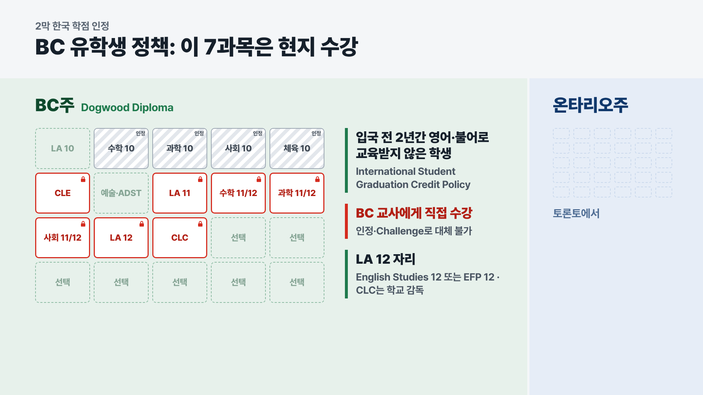
내레이션 [calm] 하지만 유학생에게는 제한이 있습니다. 입국 전 2년 동안 영어나 불어로 공부하지 않았다면, 이 일곱 과목은 인정이나 챌린지 없이 BC 교사에게 직접 들어야 해요.
화면 자물쇠 7개가 잠김(0.5-4s); '입국 전 2년'(4-8s); '직접 수강, 대체 불가'(8-12s)
소리 자물쇠 '철컥' 7번, 빠르게
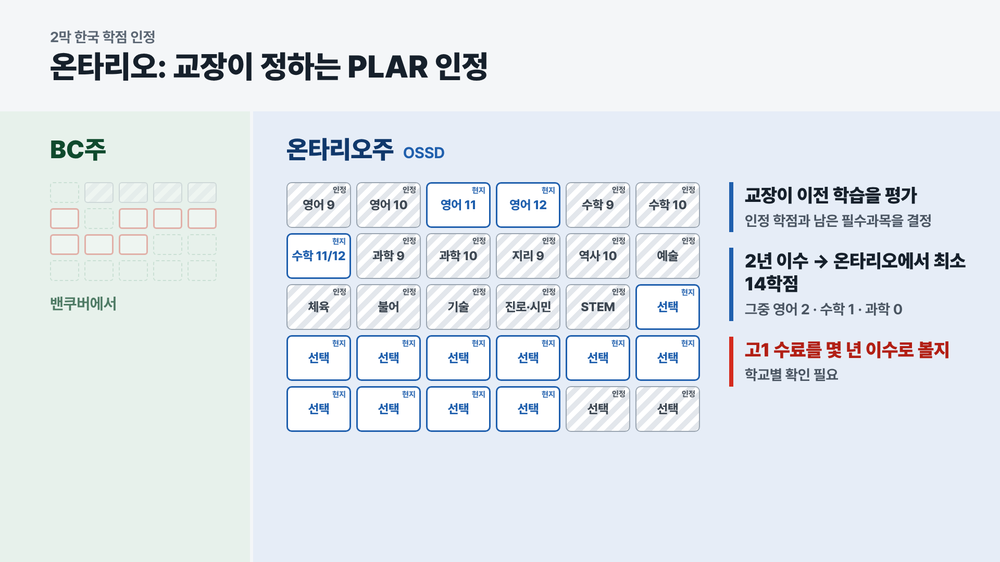
내레이션 [calm] 온타리오는 교장이 이전 학습을 평가해 인정 학점과 남은 필수과목을 정합니다. 정부 전학생 기준표에서 2년을 이수한 학생은 온타리오에서 최소 14학점을 따면 되고, 여기에 영어 두 과목, 수학 한 과목이 들어갑니다.
화면 인정 블록이 넓게 채워짐(0.5-4s); '최소 14학점'(4-9s); '영어 2 · 수학 1'(9-13s)
소리 블록이 한꺼번에 '촤르륵' 채워짐
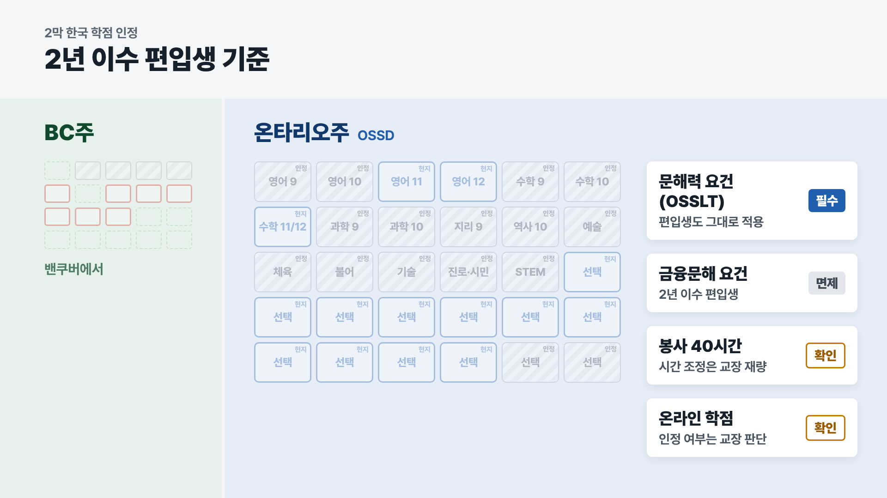
내레이션 [calm] 문해력 요건은 그대로 필요하지만, 금융문해 요건은 면제입니다. 봉사시간과 온라인 학점은 교장이 판단해요.
화면 'OSSLT 필수'(0.5-3s); '금융문해 면제'(3-5.5s); '교장 재량/판단'(5.5-9s)
소리 체크 '틱'
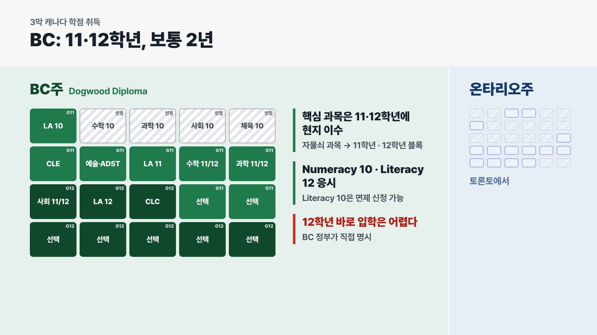
내레이션 [calm] BC의 민준이는 11학년과 12학년 2년 동안 핵심 과목을 현지에서 채우고, 졸업 평가도 치러야 합니다. 12학년으로 바로 들어가면 졸업 요건을 맞추기 어렵다고 BC 정부도 안내하고 있어요.
화면 11학년 블록 채움(0.5-5s); 12학년 블록 채움(5-9s); '12학년 바로 입학은 어렵다'(9-13s)
소리 블록 '톡톡' 리듬, 마지막 칸 채울 때 '띵'
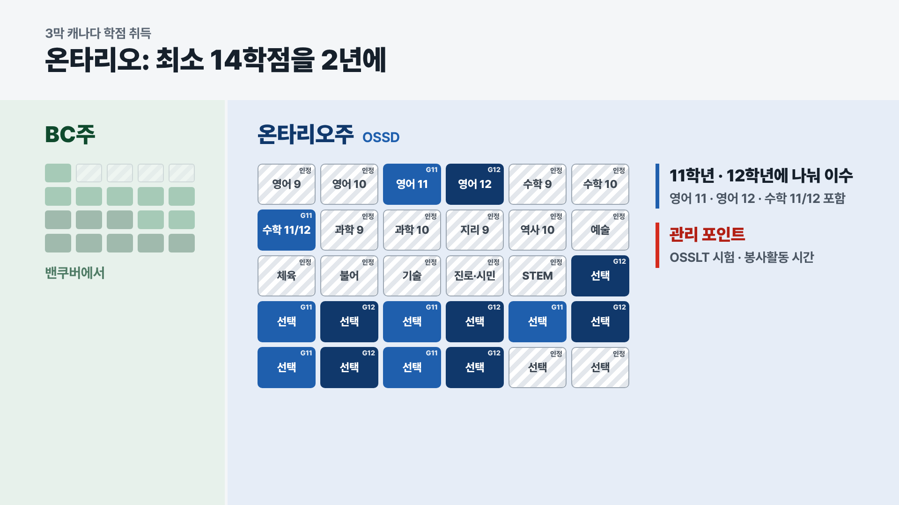
내레이션 [calm] 온타리오의 민준이는 남은 14학점 이상을 2년에 나눠 채웁니다. 이때 관리 포인트는 OSSLT 시험과 봉사활동 시간이에요.
화면 14칸이 11·12학년으로 채워짐(0.5-5s); '관리 포인트: OSSLT · 봉사'(5-10s)
소리 블록 '톡톡', 마지막에 '띵'
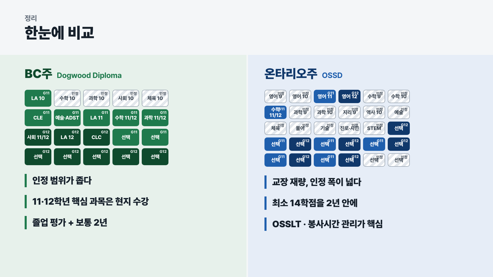
내레이션 [calm] 정리하면, BC는 인정 범위가 좁아 핵심 과목을 현지에서 들어야 하고, 온타리오는 인정 폭이 넓어 남은 학점을 채우는 구조입니다.
화면 BC 세 줄(0.5-5s); 온타리오 세 줄(5-11s)
소리 BGM 한 단계 올라감
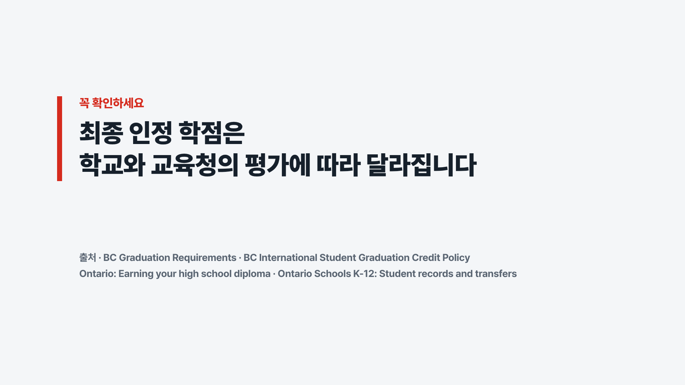
내레이션 [calm] 단, 최종 인정 학점은 학교와 교육청의 평가에 따라 달라집니다.
화면 주의 문구(0.5-6s)
소리 BGM 잠시 낮춤
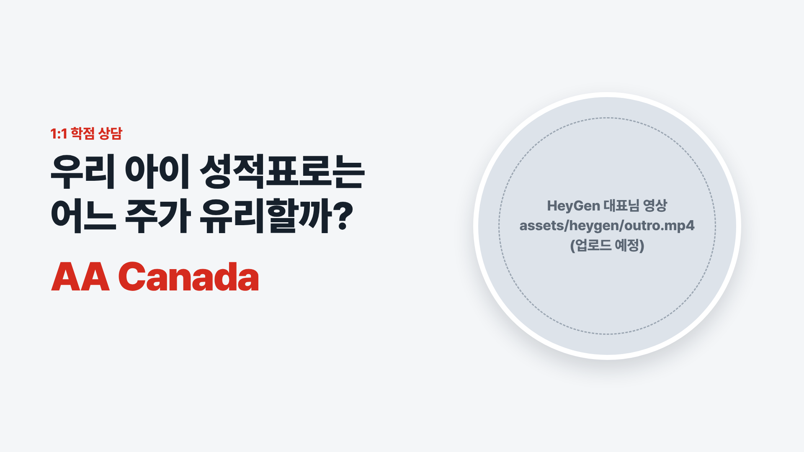
내레이션 (HeyGen 영상 음성 — HEYGEN_SCRIPT.md 아웃트로)
화면 대표님 얼굴(0-9s); 질문 두 줄(0.6-5s); 'AA Canada' 마크(5-9s)
소리 BGM 마무리